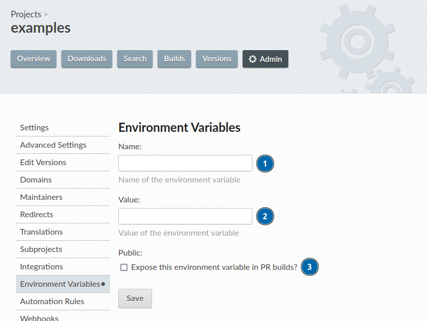

How to use custom environment variables
If extra environment variables are needed in the build process, you can define them from the project's dashboard.
参见
- Environment variable overview
Learn more about how Read the Docs applies environment variables in your builds.
Go to your project's and click on Add Environment Variable. You will then see the form for adding an environment variable:
Fill in the Name field, this is the name of your variable, for instance
SECRET_TOKENorPIP_EXTRA_INDEX_URL.Fill in the Value field with the environment variable's value, for instance a secret token or a build configuration.
Check the Public option if you want to expose this environment variable to builds from pull requests.
警告
If you make your environment variable public, any user that can create a pull request on your repository will be able to see the value of this environment variable. In other words, do not use this option if your environment variable is a secret.
Finally, click on Save. Your custom environment variable is immediately active for all future builds and you are ready to start using it.
Note that once you create an environment variable, you won't be able to edit or view its value. The only way to edit an environment variable is to delete and create it again.
Keep reading for a few examples of using environment variables. ⬇️
Accessing environment variables in code
After adding an environment variable, you can read it from your build process, for example in your Sphinx's configuration file:
import os
import requests
# Access to our custom environment variables
username = os.environ.get("USERNAME")
password = os.environ.get("PASSWORD")
# Request a username/password protected URL
response = requests.get(
"https://httpbin.org/basic-auth/username/password",
auth=(username, password),
)
Accessing environment variables in build commands
You can also use any of these variables from user-defined build jobs in your project's configuration file:
version: 2
build:
os: ubuntu-22.04
tools:
python: 3.10
jobs:
post_install:
- curl -u ${USERNAME}:${PASSWORD} https://httpbin.org/basic-auth/username/password
备注
If you use ${SECRET_ENV} in a command in .readthedocs.yaml,
the private value of the environment variable is not substituted in log entries of the command.
It will also be logged as ${SECRET_ENV}.